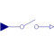

SampleSample the continuous-time, Real input signal and provide it as clocked output signal (clock is inferred) |

|
Information
This information is part of the Modelica Standard Library maintained by the Modelica Association.
This block samples the continuous-time, Real input signal u and provides it as clocked output signal y. The clock of the output signal is inferred (that is, it needs to be defined somewhere else in the clocked partition). If this is not desired, use block SampleClocked instead, to explicitly assign a clock to the output signal.
To be more precise: The input signal u(t) must be a continuous-time signal.
The output signal y(ti) is associated to a clock (defined somewhere else).
At a clock tick, the left limit of u is assigned to y:
y(ti) = u(ti-eps) (= the value of u just before the clock
became active). Since the operator returns the left limit of u, it introduces an
infinitesimal small delay between the continuous-time and the clocked partition.
This corresponds to the reality, where a sampled data system cannot act infinitely
fast and even for a very idealized simulation, an infinitesimal small delay is present.
As a result, algebraic loops between clocked and continuous-time partitions cannot
occur.
Examples
The following
example
samples a sine signal with a periodic clock of 20 ms period:
 |
 |
|
| model | simulation result |
In the following
example
the continuous-time input signal contains a discontinuous value change at the 0.1 s
clock tick. It can be seen that the Sample block samples the left limit of the
step signal:
 |
 |
|
| model | simulation result |
In the following
example
a direct feedthrough in the continuous-time and in the clocked partition is present.
Without a time-delay, this would result in an algebraic loop. However, since block
Sample samples the left limit of a continuous-time signal, sampling introduces a
delay of one sample period that breaks the algebraic loop:
 |
|
| model |
|
 |
|
| simulation result |
Note, the reason for the delay is that sample2.y (= the green, clocked signal) is the left limit of hold.y (= the red, continuous-time signal).
Connectors (2)
| u |
Type: RealInput Description: Connector of continuous-time, Real input signal |
|
|---|---|---|
| y |
Type: RealOutput Description: Connector of clocked, Real output signal |
Used in Examples (12)
|
ClockedWithDiscreteTextbookController Modelica.Clocked.Examples.SimpleControlledDrive Simple controlled drive with discrete textbook controller (period is not used in the controller) |
|
|
Modelica.Clocked.Examples.SimpleControlledDrive Simple controlled drive with discrete controller (period is used in the controller) |
|
|
ExactlyClockedWithDiscreteController Modelica.Clocked.Examples.SimpleControlledDrive Simple controlled drive with discrete controller and exact periodic clocks (period is used in the controller) |
|
|
ClockedWithDiscretizedContinuousController Modelica.Clocked.Examples.SimpleControlledDrive Simple controlled drive with discretized continuous-time controller |
|
|
Modelica.Clocked.Examples.CascadeControlledDrive Drive with clocked cascade controller where clocks are defined with sub-sampling and partitions with super-sampling |
|
|
Modelica.Clocked.Examples.CascadeControlledDrive Drive with clocked cascade controller where fastest partition is defined with a clock and slower partition is defined with super-sampling |
|
|
Modelica.Clocked.Examples.CascadeControlledDrive Drive with clocked cascade controller where all partitions are defined with exact (integer) clock that need to be compatible to each other |
|
|
Modelica.Clocked.Examples.Systems Simple example of a mixing unit where a (discretized) nonlinear inverse plant model is used as feedforward controller |
|
|
Modelica.Clocked.Examples.Systems Closed-loop throttle control synchronized to the crankshaft angle of an internal combustion engine |
|
|
Modelica.Clocked.Examples.Elementary.RealSignals Example of a Sample block for Real signals |
|
|
Modelica.Clocked.Examples.Elementary.RealSignals Example of a Sample block with discontinuous Real input signals |
|
|
Modelica.Clocked.Examples.Elementary.RealSignals Example of a Sample block for Real signals with direct feed-through in the continuous-time and the clocked partition |
Used in Components (1)
|
Modelica.Clocked.RealSignals.Sampler Sample with (simulated) Analog-Digital converter effects including noise |